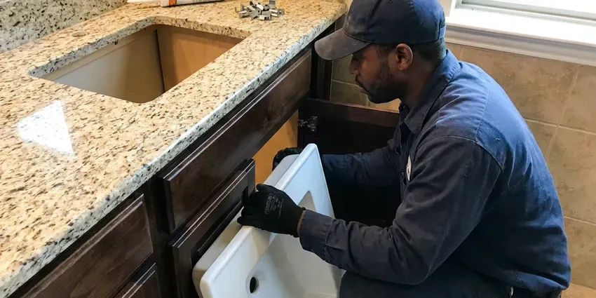

Shower Replacement in Marrero, LA
Looking to upgrade your bathroom? Beau's Plumbing offers professional shower replacement services across Marrero, LA.
- Licensed & Insured
- Workmanship Guarantee
- Quick Shower Replacement Quotes
- Anti-Scald Valve Upgrades

Ready for a New Shower in Marrero, LA?
We help you choose between a valve swap, pan replacement or full rebuild based on what your shower needs.
Shower Replacement for Outdated and Leaking Showers in Marrero, LA
At Beau's Plumbing, we understand the importance of a functional and appealing shower. Our team handles all aspects of shower replacement in Marrero, LA, using quality materials and careful techniques to deliver a beautiful, watertight result.
Our expertise includes:
- Installation of new shower valves and fixtures
- Code-compliant drain and water line connections
- Old two- and three-handle valve replacement with anti-scald valves

Additional Bathroom Plumbing Services in Marrero, LA
From toilets to showers, our bathroom plumbing team in Marrero, LA handles repairs, installs, and upgrades with tidy, code-compliant work.


Customers
Why Choose Beau's Plumbing for Shower Replacement in Marrero, LA?
Choosing the right plumbing partner for shower replacement ensures a smooth project and a durable outcome. We focus on proper installation techniques to prevent future leaks or structural problems.
- Safety Upgrade, New valves include pressure-balance or thermostatic scald protection.
- Damage Check, We inspect framing and subfloor for rot and mold before we rebuild.
- Local Expertise, We understand local Marrero, LA building codes and common home plumbing systems.
Citywide Coverage
We replace showers in homes across Marrero, from 1970s builds with original valves to newer homes with failing pans. Inspections and quotes are scheduled quickly.
Experienced Team
The Beau's Plumbing team brings years of hands-on experience to every shower replacement project. Our skilled plumbers are skilled at working with various shower types and configurations, ensuring a precise and efficient installation every time.
Safety-First Approach
Safety and code compliance are top priorities for every shower replacement we take on. We make sure all water lines, drains, and ventilation meet Marrero, LA plumbing codes to prevent water damage, mold, and other potential hazards.
Trusted Certified Marrero Plumbing Services Professionals
At Beau's Plumbing, we take pride in providing certified plumbing services throughout Marrero, LA. Backed by recognized industry credentials, our experienced plumbers combine technical skill with genuine customer care. Whether it is repair, installation, or maintenance, we follow strict safety and quality standards to deliver lasting results you can trust.
Call Us Now PHCC Plumbing Contractor Recognition
PHCC Plumbing Contractor Recognition Better Business Bureau (BBB) Accreditation
Better Business Bureau (BBB) Accreditation Angi Certified Pro
Angi Certified Pro ISO 9001 Quality Management Certification
ISO 9001 Quality Management CertificationDependable Shower Replacement Services in Marrero, LA
Replacing Showers for Hard Water Issues in Marrero, LA
Some Louisiana groundwater carries iron and sulfur, which can cause sulfur smells, stains, and buildup in water heaters. Hard water can cause mineral buildup in showerheads, valves, and on surfaces, leading to reduced water pressure and a dingy appearance. If mineral scale has damaged your shower beyond repair, Beau's Plumbing can replace affected components or the entire unit. We can also recommend solutions like water softeners to prevent future issues, helping your new shower in Marrero, LA maintain its performance and looks for years to come.

Standard Shower Unit Replacement in Marrero
When your existing shower unit is old, cracked, or simply outdated, Beau's Plumbing offers complete replacement services. We carefully remove the old unit, inspect the subfloor and wall structure for any hidden damage, and install a new, durable shower pan and surround. Our team makes sure of proper sealing and watertight connections to prevent leaks and protect your home from moisture issues. We work with standard-sized units, making the upgrade process efficient and straightforward.
Custom Shower Installation in Marrero, LA
For homeowners looking for a more personalized bathing experience, we provide custom shower installation services. This includes working with various materials like tile, cultured marble, and acrylic, and adding features such as built-in benches, niches, or multiple showerheads. Our plumbers collaborate with you or your contractor to make sure all plumbing rough-ins are aligned for your chosen design. We handle everything from the water supply lines to the drain, guaranteeing a functional and attractive custom shower.
Cost-Effective Shower Upgrades in Marrero, LA
While a full bathroom remodel can be extensive, replacing just your shower can be a cost-effective way to refresh your bathroom's look and function. Beau's Plumbing offers various options to fit different budgets, from replacing a basic shower stall to installing a more luxurious custom unit. We provide transparent pricing and help you choose the best solution that delivers maximum impact and value for your Marrero, LA home without breaking the bank.
Showerhead and Trim Upgrade in Marrero, LA
If the valve is sound, replacing the showerhead and trim can refresh the look without opening the wall. We match trim kits to your existing valve brand and install new heads, handhelds and slide bars. Hard water clogs older heads fast, so we recommend models with easy-clean nozzles. This is the most budget-friendly upgrade.
Shower Valve Replacement and Upgrades in Marrero
A leaky or malfunctioning shower valve can waste water and cause temperature inconsistencies. Beau's Plumbing offers professional shower valve replacement, upgrading old, corroded valves with modern, reliable models. We can install pressure-balancing valves to prevent scalding, or thermostatic valves for precise temperature control. This service often goes along with a full shower replacement but can also be a standalone upgrade to improve your existing shower's performance and safety.
Shower Replacement Cost Comparison in Marrero, LA
A valve-only replacement usually costs far less than a full rebuild, but it only makes sense if the pan and walls are sound. Shower pan replacement often requires removing tile, which raises the cost. We compare the price of each option against the condition of your shower. That helps you invest in the fix that lasts.

Shower Pan Replacement in Marrero, LA
A cracked or leaking shower pan can damage subfloors, walls and nearby rooms. On slab homes, water can travel under flooring and cause staining and odors. We remove the old pan, repair the drain and install a new pan with proper slope and waterproofing. A flood test proves the new pan is watertight.
Expert Shower Replacement Near Me in Marrero, LA
Our plumbers are local to Marrero and familiar with the showers found in area homes. We coordinate with contractors and tile setters as needed. Every replacement is backed by our workmanship guarantee.
Beau's Plumbing understands the local needs and plumbing challenges faced by homeowners in Marrero, LA. We pride ourselves on being a community-focused plumbing company, always ready to deliver high-quality shower replacement services conveniently and efficiently to homes near you.
Beau's Plumbing at a Glance
- Licensed and insured plumbers serving Marrero, LA
- Same-day appointments and 24/7 emergency response
- Upfront, flat-rate pricing before work begins
- 4.8-star rated by 578+ Louisiana customers
Marrero Map
Marrero Information
- Population
- 32,382
- Area codes
- Local
- Service area
- Marrero and communities within 40 miles
- Nearby
- Metairie, Kenner, New Orleans, Mandeville
Homes are commonly built on slabs or raised pier foundations, and raised homes leave much of the plumbing easier to reach. Replacing an old or failing shower in Marrero, LA is a smart move, since leaks can damage framing and floors and put stress on your foundation.
Expert Services
Trust our professionals for reliable Beau's Plumbing solutions in Marrero, LA.
Our Specialized Plumbing Services in Marrero, LA
At Beau's Plumbing, we provide a complete range of plumbing services across Marrero, LA. From leak detection to full system installations, our team ensures fast, precise, and affordable service for both residential and commercial properties. Explore our core services below:


How Our Shower Replacement Process Works in Marrero, LA
Beau's Plumbing follows a clear, efficient process to make sure your new shower is installed correctly and to your satisfaction.
Request a Quote
Call (504) 317-6869 to schedule an inspection of your current shower. We explain your options and provide a written quote.
Remove and Inspect
We remove the old valve, pan or unit and inspect framing and subfloor. Any hidden damage is shown to you before we rebuild.
Install and Test
We install the new shower components and pressure-test or flood-test them. After finishing, we test temperature and flow and clean up.
Frequently Asked Questions About Shower Replacement in Marrero
The cost of shower replacement in Marrero varies widely depending on the type of shower, materials chosen, and complexity of the installation. A basic pre-fabricated unit might range from $3,000 to $6,000, while a custom tile shower could cost $7,000 to $15,000 or more. We provide a detailed estimate after an on-site assessment.
If no one uses the tub, a walk-in shower is often safer and more convenient. Keep at least one tub in the home if resale to families matters to you.
Shower replacement typically focuses on removing the old shower unit and installing a new one, often within the existing footprint. A shower remodel is a more extensive project that might involve changing the layout, moving walls, or completely redesigning the whole bathroom space around the shower.
Louisiana has many older homes with cast iron drains and galvanized steel supply pipes that corrode faster in warm, wet conditions. Older homes may have original plumbing systems that need updating during a shower replacement, such as galvanized pipes or outdated drain lines. We carefully inspect your existing plumbing to recommend necessary upgrades for strong performance and code compliance, preventing future issues.
A standard shower unit replacement can often be completed within 1 to 3 days, depending on the complexity and any unexpected issues. More extensive projects, like custom tiled showers or conversions, may take 3 to 7 days due to material drying times and detailed work.
Valve and pan replacements may require a permit depending on the city and scope. We check requirements and handle permits as needed.
Yes, tub-to-shower conversions are a popular service we offer. This involves removing the existing bathtub and installing a new shower pan, walls, and fixtures in its place. It can greatly improve accessibility and modernize your bathroom's appearance.
We install Moen, Delta, Kohler, Grohe, Hansgrohe and American Standard. We also install fiberglass and acrylic units from Sterling, American Standard and others.
What People Are Saying About Our Plumbing Experts?

Emily R.
I called Beau's Plumbing for plumbing repair, and the technician was fast, polite, and thorough. They explained the problem clearly and fixed it the same day. I will definitely hire them again. Highly recommended!
Plumbing Repair · Slidell, LA
James P.
Our commercial plumbing system had a leak under the sink, and Beau's Plumbing handled it professionally. The plumbers arrived quickly and restored everything without disruption to our customers.
Commercial Plumbing · Kenner, LARobert G.
The trenchless sewer replacement saved our front yard. They walked us through the camera inspection footage first so we knew exactly what we were paying for.
Sewer Line Replacement · Slidell, LA
Daniel K.
A pipe burst at 11 pm and they actually answered. The plumber showed up within the hour, shut everything down, and had us back to normal the next morning. Could not ask for more.
Emergency Plumbing · Mandeville, LA
Mark T.
When our office needed drain cleaning, Beau's Plumbing provided quick, reliable service. The plumber arrived on time and made sure every drain flowed perfectly before leaving. Very satisfied.
Drain Cleaning · Houma, LA
Patricia H.
We had a slab leak that two other companies could not find. Beau's Plumbing located it in under an hour, explained our options, and the price matched the quote to the dollar.
Slab Leak Repair · Houma, LA